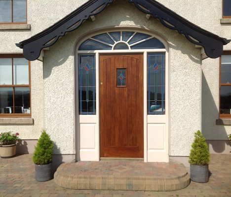

OUR WORK
Doors & windows
Timber details that welcome you home.
Discuss your joinery
The detail.
Discuss purpose-made doors and windows, including entrance features and joinery matched to the character of your home. Bring the opening dimensions and a description of the style you have in mind.
- Entrance doors
- Timber windows
- Bespoke proportions
Discuss your location, intended use and requirements with the team. The scope, specification and timing are agreed for your project.
Explore the work ↗